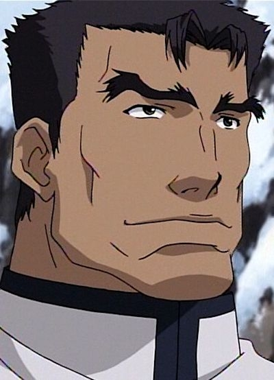

|  |
Berkens |
|
Berkens is a priest for the chruch of Mauser. He is a laid back guy who takes duties seriously. He does not like the rule of anyone who does not follow the chruch. |
| |
Ian |
- Pokemon Diamond and Pearl
|
Ian is the Gym assistant for the Oreburgh Gym. His job is to man the gym and take care of the Gym's Pokemon when Roark is at the mines. He is responsible for giving Badge cases to Trainers. |
 |
Master Hamm |
- Pokemon Advanced Generations
|
Master Hamm is the owner of the Fighting Dojo in Saffron City. He is trying to convince his son, Kyle Hamm, to run the dojo went he retires. He does understand his son's ambitions and dreams. |
 |
Mr. Stone |
- Pokemon Advanced Generations
|
Mr. Stone is the President of Devon Corporation and the father of Steven Stone. He prioritizes quality products and is prepared to invest in experimental technology rather than profit. Mr.Stone likes to speak with children, fing their young minds as a source of inspiration. |
 |
Suicune |
- Pokemon
- Pokemon Movie 4: Pokemon 4Ever
|
Suicune is a Legendary Pokemon from the Johto region. Suicune is part of the legendary beasts. It said that Suicune represent the rain quenched the flames of the burning Brass Tower. |

.jpg)